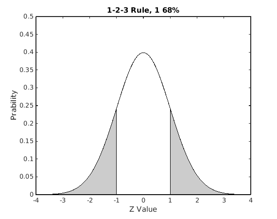
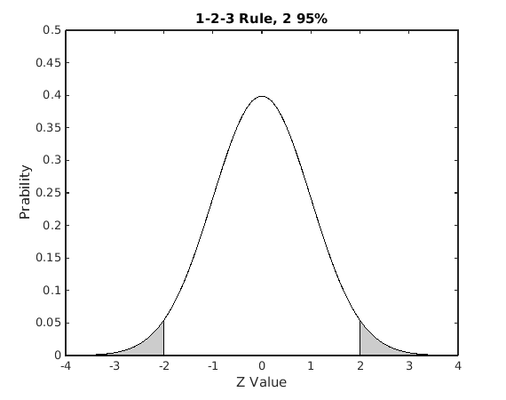
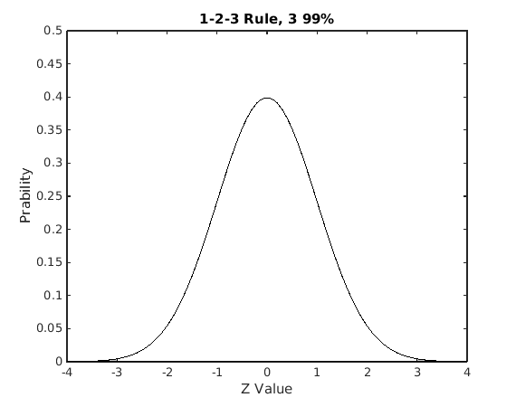

Chapter 03: The Shape of Distributions
Selected solutions for Chapter 03 The Shape of Distributions
The Shape of Distributions (1-2-3 Rules)
* Plot 1 rule * Plot 2 rule * Plot 3 rule
* Reference: Statistics Unplugged 3rd Edition * Zihan Chen * 2015-03-26
Contents
1 Rule
clc; clear; % Plot -1 to 1 as white, other grey x = -4:0.1:4; y = normpdf(x); area(x,y,'FaceColor',[0.8,0.8,0.8]); hold on; x1 = -1:0.1:1; y1 = normpdf(x1); area(x1,y1,'FaceColor','w'); title('1-2-3 Rule, 1 68%'); yaxis([0, 0.5]); xlabel('Z Value'); ylabel('Prability'); % Compute the 1 68% c = normcdf([-1 1]); carea = c(2) - c(1); careastr = sprintf('area 1 = %0.3f', carea); disp(careastr);
area 1 = 0.683
2 Rule
pause;
hold on; x2 = -2:0.1:2; y2 = normpdf(x2); area(x2,y2,'FaceColor','w'); title('1-2-3 Rule, 2 95%'); % Compute the 2 68% c = normcdf([-2 2]); carea = c(2) - c(1); careastr = sprintf('area 2 = %0.3f', carea); disp(careastr);
area 2 = 0.954
3 Rule
pause;
hold on; x3 = -3:0.1:3; y3 = normpdf(x3); area(x3,y3,'FaceColor','w'); title('1-2-3 Rule, 3 99%'); % Compute the 2 68% c = normcdf([-3 3]); carea = c(2) - c(1); careastr = sprintf('area 3 = %0.3f', carea); disp(careastr);
area 3 = 0.997